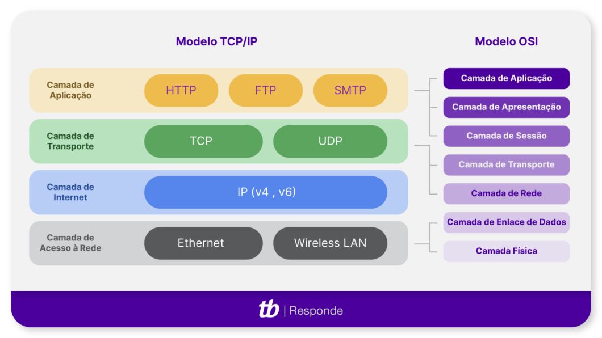
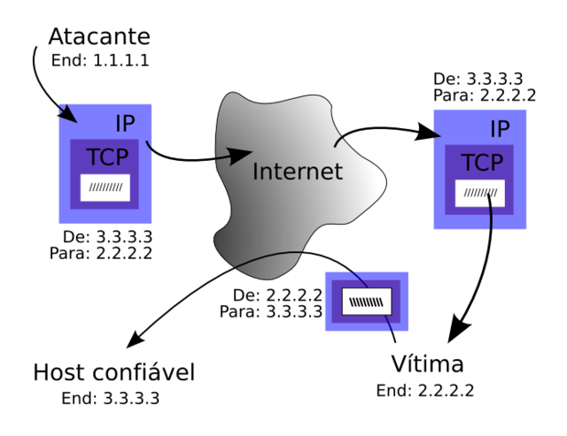
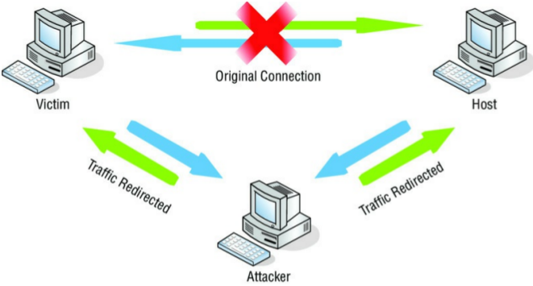
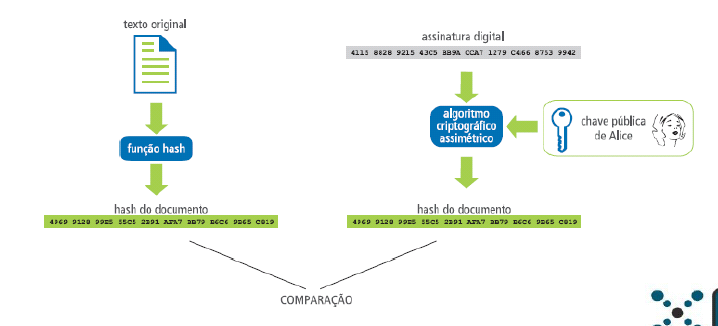
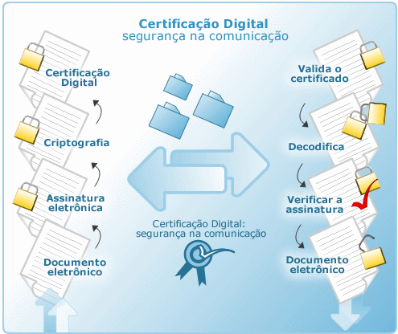

Disciplinas
Segurança da Informação. Concluído
Materiais
[UFMS Digital] Segurança da Informação - Módulo 2 - Unidade 2
Prof° ministrante: Dionisio Machado Leite Filho.
Contextualização.
A comunicação segura passa tanto pelos protocolos que compõem a rede como pelas aplicações em geral.
Há a falsa impressão que apenas a utilização de criptografia resolve todos os problemas da comunicação segura.
Lembrar que a segurança reside em disponibilidade, integridade e confiabilidade.
Contexto geral da rede
...
Vulnerabilidades do TCP/IP.

TCP/IP - anos 1980, segurança não era uma prioridade, já que quase todos os envolvidos se conheciam ou trabalhavam para o governo, para uma grande empresa ou para uma universidade.
1990 - a segurança tornou-se um problema sério devido às vulnerabilidades do TCP/IP e ao aumento considerável de sistemas que utilizam a Internet.
Algumas vulnerabilidades: falsificação de IP, sequestro de conexão, ataques de ICMP, ataques TCP SYN e ataques de RIP.
- Falsificação de IP é uma técnica na qual os agressores enviam pacotes para a vítima ou focam um computador, utilizando um endereço de origem falso.
- Adivinhação de sequenciamento - handshake de três passos, o computador de origem envia um número de sequenciamento para o computador destino como parte do pacote SYN inicial. O computador destino cria seu próprio número de sequenciamento e o entrega ao computador de origem.
- Sequestro de conexão - controlar uma conexão existente entre os computadores de origem e destino, usando o sequestro de conexão. Para isso, o agressor dessincroniza uma série de pacotes entre o computador de origem e o destino. Pacotes extras enviados a uma das vítimas com os mesmos números de sequenciamento dos pacotes autênticos forçam a vítima a escolher qual aceitar.
- Ataque de ICMP - os pacotes são usados para enviar informações de conexão fraudulentas visando DoS.



...
Assinatura digital.
- Uma assinatura digital permite comprovar a autenticidade e a integridade de uma informação.
- A assinatura digital baseia-se no fato de que apenas o dono conhece a chave privada.
- A verificação da assinatura é feita com o uso da chave pública, pois se o texto foi codificado com a chave privada, somente a chave pública correspondente pode decodificá-lo.
- A chave pública pode ser livremente divulgada.

...
Certificado digital.
O certificado digital é um documento eletrônico que contém dados sobre a pessoa ou entidade que o utiliza para comprovação mútua de autenticidade.
Com a função parecida a de um RG ou CPF, permite que uma transação realizada via internet torne-se perfeitamente segura, já que as partes envolvidas deverão apresentar mutuamente suas credenciais, comprovando suas identidades.
Usuário tem a opção de utilizar sua assinatura digital, garantindo, numa troca de documentos, autenticação, sigilo e integridade de conteúdo.

..
Autoridade certificadora.
No Brasil, o órgão da autoridade certificadora raiz é o ICP-Brasil (AC-Raiz).
Outras autoridades certificadoras: Serpro (AC-SERPRO), Caixa Econômica Federal (AC-CAIXA), Serasa Experian (AC-SERASA), Receita Federal do Brasil, (AC-RFB), Certisign (AC-Certisign), Imprensa Oficial do Estado de São Paulo (AC-IOSP), Autoridade Certificadora da Justiça (AC-JUS), Autoridade Certificadora da Presidência da República (AC-PR) e Casa da Moeda do Brasil (AC-CMB).